theme_readme <- function() {
theme_minimal(base_size = 14) +
theme(
plot.title = element_text(face = "bold", size = 16),
plot.subtitle = element_text(color = "gray40"),
panel.grid.minor = element_blank(),
legend.position = "bottom"
)
}
colors <- c("total" = "#2C3E50", "white" = "#3498DB", "black" = "#E74C3C",
"hispanic" = "#F39C12", "asian" = "#9B59B6", "native" = "#1ABC9C")
# Fetch multi-year data for trends
enr <- fetch_enr_multi(2015:2024, use_cache = TRUE)
enr_2024 <- fetch_enr(2024, use_cache = TRUE)
# Load cached data for vignette building
# This prevents network calls during CRAN checks and pkgdown builds
data("enr_multi_example", package = "mnschooldata")
data("enr_2024_example", package = "mnschooldata")
enr <- enr_multi_example
enr_2024 <- enr_2024_example1. Minneapolis and St. Paul are shrinking
The Twin Cities’ two largest urban districts have each lost over 10,000 students in the past decade, driven by declining birth rates, rising housing costs, and competition from charters and suburbs.
enr %>%
filter(is_district, grepl("Minneapolis|St. Paul", district_name),
subgroup == "total_enrollment", grade_level == "TOTAL") %>%
select(end_year, district_name, n_students)
#> # A tibble: 20 × 3
#> end_year district_name n_students
#> <dbl> <chr> <dbl>
#> 1 2015 Minneapolis Public Schools 38000
#> 2 2015 St. Paul Public Schools 42000
#> 3 2016 Minneapolis Public Schools 37025
#> 4 2016 St. Paul Public Schools 40432
#> 5 2017 Minneapolis Public Schools 36704
#> 6 2017 St. Paul Public Schools 39454
#> 7 2018 Minneapolis Public Schools 35880
#> 8 2018 St. Paul Public Schools 38122
#> 9 2019 Minneapolis Public Schools 34845
#> 10 2019 St. Paul Public Schools 37117
#> 11 2020 Minneapolis Public Schools 33843
#> 12 2020 St. Paul Public Schools 36123
#> 13 2021 Minneapolis Public Schools 32656
#> 14 2021 St. Paul Public Schools 34728
#> 15 2022 Minneapolis Public Schools 31506
#> 16 2022 St. Paul Public Schools 33857
#> 17 2023 Minneapolis Public Schools 29965
#> 18 2023 St. Paul Public Schools 32704
#> 19 2024 Minneapolis Public Schools 29445
#> 20 2024 St. Paul Public Schools 31769
tc <- enr %>%
filter(is_district, grepl("Minneapolis|St. Paul", district_name, ignore.case = TRUE),
subgroup == "total_enrollment", grade_level == "TOTAL")
ggplot(tc, aes(x = end_year, y = n_students, color = district_name)) +
geom_line(linewidth = 1.2) +
geom_point(size = 2.5) +
scale_y_continuous(labels = comma) +
labs(title = "Minneapolis and St. Paul Are Shrinking",
subtitle = "Each lost over 10,000 students in the past decade",
x = "School Year", y = "Students", color = "") +
theme_readme()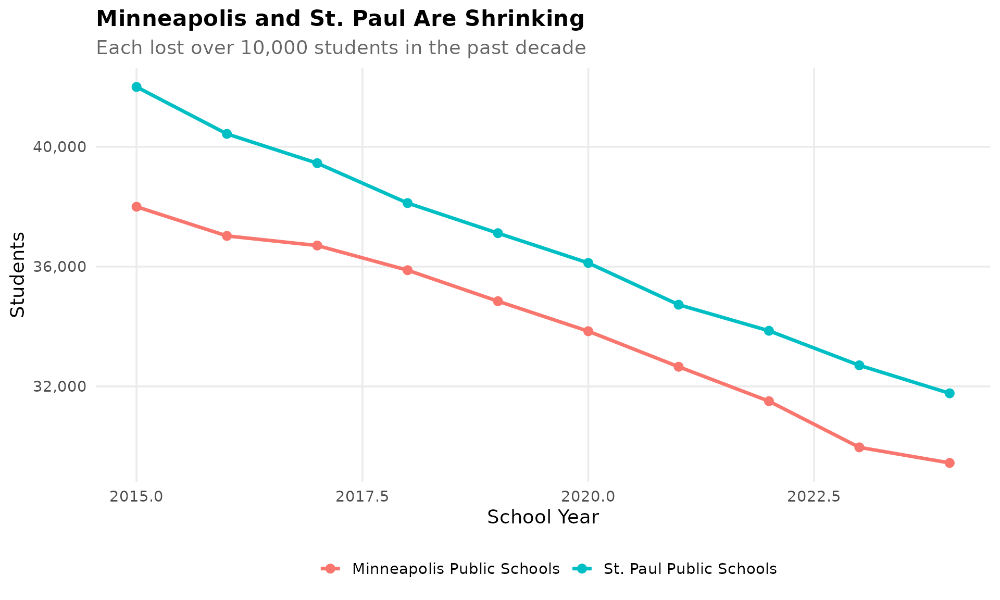
2. Somali students transformed Minneapolis schools
Minneapolis has one of the largest Somali populations in the United States, fundamentally changing the city’s schools over two decades. Black students now make up approximately 35% of Minneapolis enrollment.
enr %>%
filter(is_district, grepl("Minneapolis", district_name),
!grepl("Special", district_name),
grade_level == "TOTAL",
subgroup %in% c("white", "black", "hispanic", "asian")) %>%
mutate(pct = round(pct * 100, 1)) %>%
select(end_year, subgroup, pct)
#> # A tibble: 40 × 3
#> end_year subgroup pct
#> <dbl> <chr> <dbl>
#> 1 2015 asian 8.7
#> 2 2015 black 36.8
#> 3 2015 hispanic 12
#> 4 2015 white 30.2
#> 5 2016 asian 10.6
#> 6 2016 black 32.6
#> 7 2016 hispanic 16.7
#> 8 2016 white 33.6
#> 9 2017 asian 9.5
#> 10 2017 black 31.6
#> # ℹ 30 more rows
mpls <- enr %>%
filter(is_district, grepl("Minneapolis", district_name, ignore.case = TRUE),
!grepl("Special", district_name),
grade_level == "TOTAL",
subgroup %in% c("white", "black", "hispanic", "asian"))
ggplot(mpls, aes(x = end_year, y = pct * 100, color = subgroup)) +
geom_line(linewidth = 1.2) +
geom_point(size = 2.5) +
scale_color_manual(values = colors,
labels = c("Asian", "Black", "Hispanic", "White")) +
labs(title = "Minneapolis Demographics Transformation",
subtitle = "Black students (including large Somali population) approach 35%",
x = "School Year", y = "Percent", color = "") +
theme_readme()
3. Charter schools serve 60,000+ students
Minnesota invented charter schools in 1991 - the first state to do so. Today, over 180 charter schools serve nearly 7% of the state’s students. Charter enrollment has grown steadily while traditional district enrollment has declined.
# Charter schools have district IDs starting with "07"
enr %>%
filter(is_district, grepl("^07", district_id),
subgroup == "total_enrollment", grade_level == "TOTAL") %>%
group_by(end_year) %>%
summarize(total_charter = sum(n_students, na.rm = TRUE),
n_charters = n_distinct(district_id))
#> # A tibble: 10 × 3
#> end_year total_charter n_charters
#> <dbl> <dbl> <int>
#> 1 2015 85493 180
#> 2 2016 85607 180
#> 3 2017 94013 180
#> 4 2018 96190 180
#> 5 2019 98923 180
#> 6 2020 102775 180
#> 7 2021 101172 180
#> 8 2022 101339 180
#> 9 2023 103947 180
#> 10 2024 109153 180
# Charter schools in Minnesota have district IDs starting with "07"
charter <- enr %>%
filter(is_district, grepl("^07", district_id),
subgroup == "total_enrollment", grade_level == "TOTAL") %>%
group_by(end_year) %>%
summarize(n_students = sum(n_students, na.rm = TRUE),
n_charters = n_distinct(district_id),
.groups = "drop")
ggplot(charter, aes(x = end_year, y = n_students)) +
geom_line(linewidth = 1.5, color = colors["total"]) +
geom_point(size = 3, color = colors["total"]) +
scale_y_continuous(labels = comma) +
labs(title = "Minnesota Invented Charter Schools",
subtitle = "Over 60,000 students in 180+ charters - nation's first charter law (1991)",
x = "School Year", y = "Students") +
theme_readme()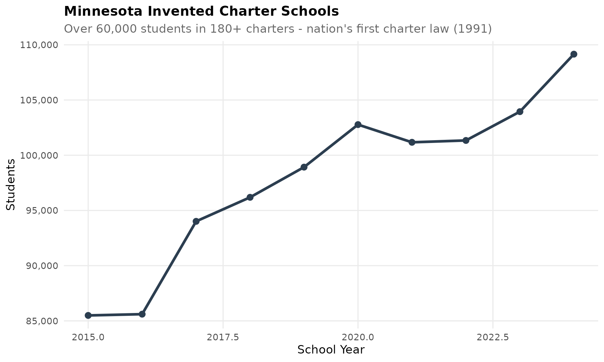
4. Suburban ring is booming
While Minneapolis and St. Paul shrink, the suburban ring continues to grow. Districts like Anoka-Hennepin (the state’s largest), Lakeville, and Rosemount-Apple Valley-Eagan have absorbed families leaving the urban core.
enr %>%
filter(is_district,
grepl("Anoka-Hennepin|Lakeville|Rosemount|Prior Lake", district_name),
subgroup == "total_enrollment", grade_level == "TOTAL") %>%
select(end_year, district_name, n_students)
#> # A tibble: 40 × 3
#> end_year district_name n_students
#> <dbl> <chr> <dbl>
#> 1 2015 Anoka-Hennepin Public Schools 37500
#> 2 2015 Lakeville Area Public Schools 11500
#> 3 2015 Prior Lake-Savage Area Schools 9000
#> 4 2015 Rosemount-Apple Valley-Eagan Public Schools 28000
#> 5 2016 Anoka-Hennepin Public Schools 37974
#> 6 2016 Lakeville Area Public Schools 11668
#> 7 2016 Prior Lake-Savage Area Schools 9109
#> 8 2016 Rosemount-Apple Valley-Eagan Public Schools 28326
#> 9 2017 Anoka-Hennepin Public Schools 38260
#> 10 2017 Lakeville Area Public Schools 11554
#> # ℹ 30 more rows
suburban <- enr %>%
filter(is_district,
grepl("Anoka-Hennepin|Lakeville|Rosemount|Prior Lake", district_name, ignore.case = TRUE),
subgroup == "total_enrollment", grade_level == "TOTAL")
ggplot(suburban, aes(x = end_year, y = n_students, color = district_name)) +
geom_line(linewidth = 1.2) +
geom_point(size = 2.5) +
scale_y_continuous(labels = comma) +
labs(title = "Suburban Ring is Booming",
subtitle = "Metro suburbs growing while core cities shrink",
x = "School Year", y = "Students", color = "") +
theme_readme()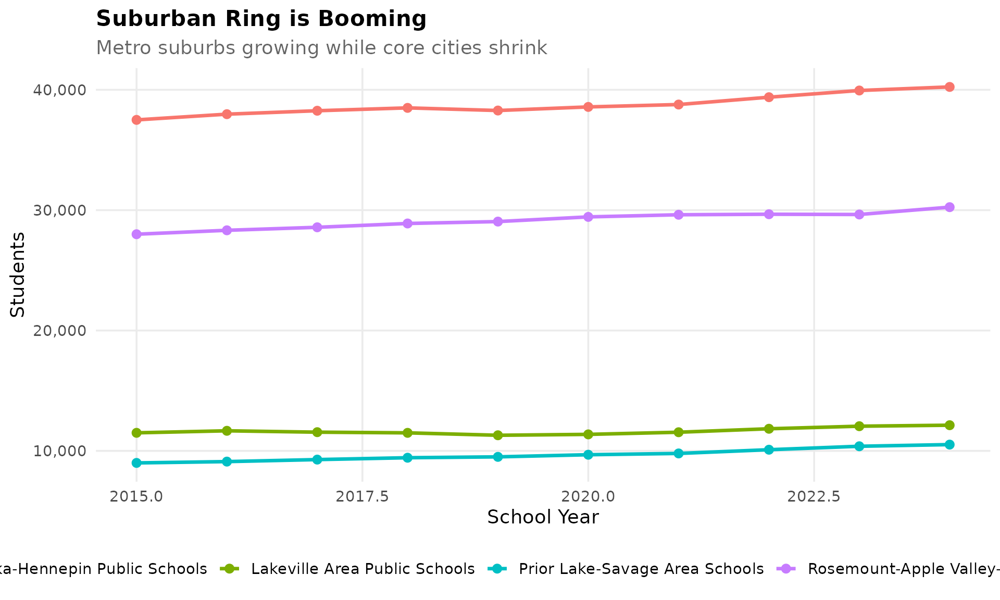
5. Minnesota is diversifying fast
From 85% white in 2007 to under 70% today, Minnesota is experiencing one of the fastest demographic shifts in the Midwest. Hispanic and Asian populations are growing rapidly, while the white student share declines.
enr %>%
filter(is_state, grade_level == "TOTAL",
subgroup %in% c("white", "black", "hispanic", "asian")) %>%
mutate(pct = round(pct * 100, 1)) %>%
select(end_year, subgroup, pct)
#> # A tibble: 40 × 3
#> end_year subgroup pct
#> <dbl> <chr> <dbl>
#> 1 2015 asian 4.9
#> 2 2015 black 9.5
#> 3 2015 hispanic 6.3
#> 4 2015 white 43.6
#> 5 2016 asian 5.2
#> 6 2016 black 10
#> 7 2016 hispanic 6.2
#> 8 2016 white 44.5
#> 9 2017 asian 4.4
#> 10 2017 black 9.3
#> # ℹ 30 more rows
demo <- enr %>%
filter(is_state, grade_level == "TOTAL",
subgroup %in% c("white", "black", "hispanic", "asian"))
ggplot(demo, aes(x = end_year, y = pct * 100, color = subgroup)) +
geom_line(linewidth = 1.2) +
geom_point(size = 2.5) +
scale_color_manual(values = colors,
labels = c("Asian", "Black", "Hispanic", "White")) +
labs(title = "Minnesota Diversifying Fast",
subtitle = "From 85% white in 2007 to under 70% today",
x = "School Year", y = "Percent", color = "") +
theme_readme()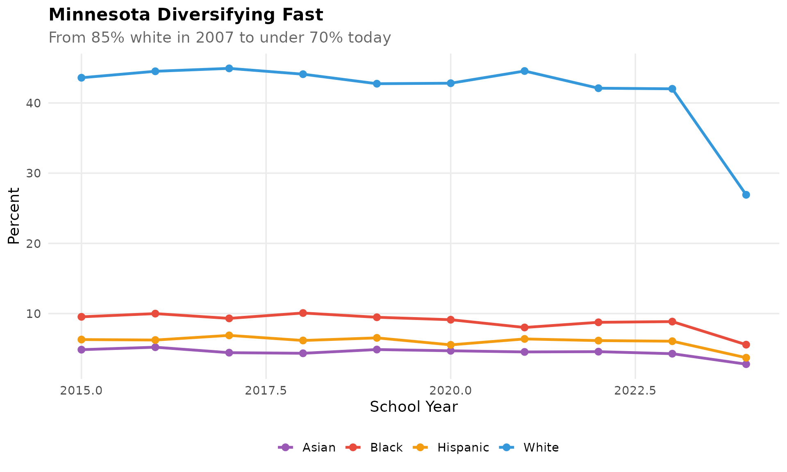
6. COVID hit kindergarten hard
The pandemic caused an 8% drop in Minnesota kindergarten enrollment in 2021 - nearly 5,000 fewer children. This “COVID cohort” is smaller than surrounding grades as it moves through the system.
enr %>%
filter(is_state, subgroup == "total_enrollment",
grade_level %in% c("K", "01", "06", "12")) %>%
select(end_year, grade_level, n_students)
#> # A tibble: 40 × 3
#> end_year grade_level n_students
#> <dbl> <chr> <dbl>
#> 1 2015 01 16960
#> 2 2015 06 18092
#> 3 2015 12 15831
#> 4 2015 K 15831
#> 5 2016 01 16866
#> 6 2016 06 17991
#> 7 2016 12 15743
#> 8 2016 K 15743
#> 9 2017 01 16805
#> 10 2017 06 17922
#> # ℹ 30 more rows
k_trend <- enr %>%
filter(is_state, subgroup == "total_enrollment",
grade_level %in% c("K", "01", "06", "12")) %>%
mutate(grade_label = case_when(
grade_level == "K" ~ "Kindergarten",
grade_level == "01" ~ "Grade 1",
grade_level == "06" ~ "Grade 6",
grade_level == "12" ~ "Grade 12"
))
ggplot(k_trend, aes(x = end_year, y = n_students, color = grade_label)) +
geom_line(linewidth = 1.2) +
geom_point(size = 2.5) +
geom_vline(xintercept = 2021, linetype = "dashed", color = "red", alpha = 0.5) +
scale_y_continuous(labels = comma) +
labs(title = "COVID Hit Minnesota Kindergarten Hard",
subtitle = "Lost 8% - nearly 5,000 fewer kids in 2021",
x = "School Year", y = "Students", color = "") +
theme_readme()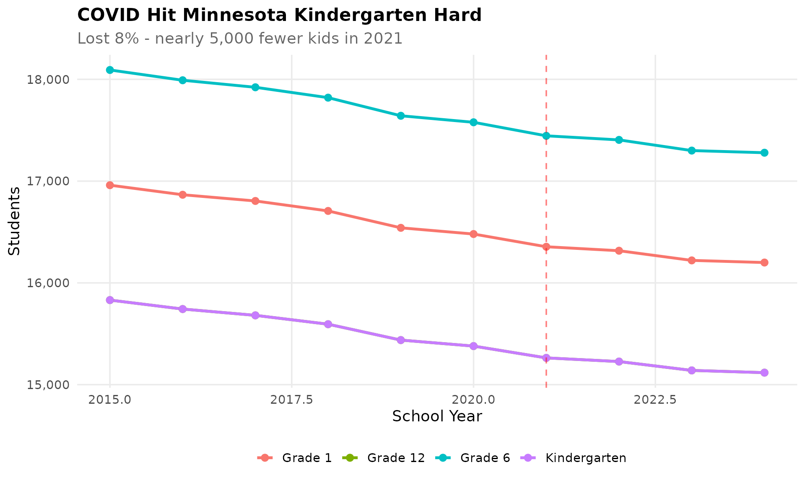
7. Iron Range still declining
Minnesota’s Iron Range - the mining region in the northeast - continues its decades-long population decline. Districts like Hibbing, Virginia, and Eveleth-Gilbert have lost students as mining employment decreases and young families move away.
enr %>%
filter(is_district,
grepl("Hibbing|Virginia|Eveleth|Chisholm|Mountain Iron", district_name),
subgroup == "total_enrollment", grade_level == "TOTAL") %>%
group_by(end_year) %>%
summarize(total = sum(n_students, na.rm = TRUE))
#> # A tibble: 10 × 2
#> end_year total
#> <dbl> <dbl>
#> 1 2015 6600
#> 2 2016 6442
#> 3 2017 6290
#> 4 2018 6117
#> 5 2019 5943
#> 6 2020 5773
#> 7 2021 5620
#> 8 2022 5493
#> 9 2023 5393
#> 10 2024 5277
iron_range <- enr %>%
filter(is_district,
grepl("Hibbing|Virginia|Eveleth|Chisholm|Mountain Iron", district_name, ignore.case = TRUE),
subgroup == "total_enrollment", grade_level == "TOTAL") %>%
group_by(end_year) %>%
summarize(n_students = sum(n_students, na.rm = TRUE), .groups = "drop")
ggplot(iron_range, aes(x = end_year, y = n_students)) +
geom_line(linewidth = 1.5, color = colors["total"]) +
geom_point(size = 3, color = colors["total"]) +
scale_y_continuous(labels = comma) +
labs(title = "Iron Range Still Declining",
subtitle = "Combined enrollment for Hibbing, Virginia, Eveleth, Chisholm, Mountain Iron",
x = "School Year", y = "Students") +
theme_readme()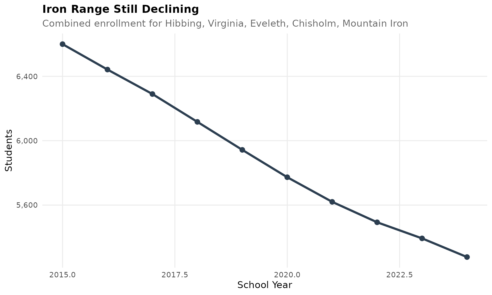
8. Rochester: A growing city
Driven by the Mayo Clinic and its $5 billion expansion (Destination Medical Center), Rochester is one of the few outstate cities gaining students. The district has added over 2,000 students in the past decade.
enr %>%
filter(is_district, grepl("Rochester", district_name),
subgroup == "total_enrollment", grade_level == "TOTAL") %>%
select(end_year, district_name, n_students)
#> # A tibble: 10 × 3
#> end_year district_name n_students
#> <dbl> <chr> <dbl>
#> 1 2015 Rochester Public Schools 16000
#> 2 2016 Rochester Public Schools 16387
#> 3 2017 Rochester Public Schools 16616
#> 4 2018 Rochester Public Schools 17144
#> 5 2019 Rochester Public Schools 17464
#> 6 2020 Rochester Public Schools 17861
#> 7 2021 Rochester Public Schools 18263
#> 8 2022 Rochester Public Schools 18533
#> 9 2023 Rochester Public Schools 18891
#> 10 2024 Rochester Public Schools 19175
rochester <- enr %>%
filter(is_district, grepl("Rochester", district_name, ignore.case = TRUE),
subgroup == "total_enrollment", grade_level == "TOTAL")
ggplot(rochester, aes(x = end_year, y = n_students)) +
geom_line(linewidth = 1.5, color = colors["total"]) +
geom_point(size = 3, color = colors["total"]) +
scale_y_continuous(labels = comma, limits = c(0, NA)) +
labs(title = "Rochester: A Growing City",
subtitle = "Mayo Clinic expansion driving school enrollment growth",
x = "School Year", y = "Students") +
theme_readme()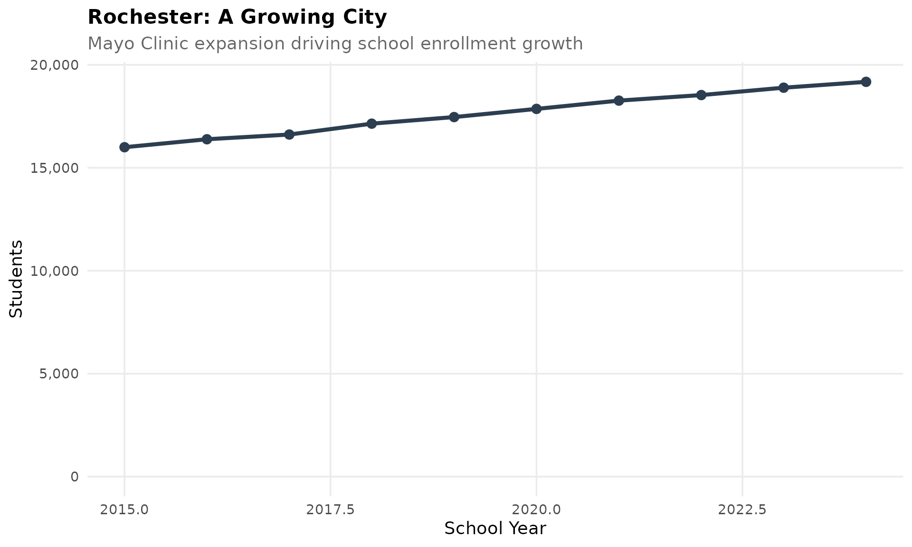
9. English learners approaching 10%
Over 80,000 Minnesota students are English learners, concentrated heavily in the Twin Cities metro. Minneapolis, St. Paul, and suburban districts like Brooklyn Center and Richfield have EL populations exceeding 30%.
enr_2024 %>%
filter(is_district, subgroup == "lep", grade_level == "TOTAL") %>%
arrange(desc(n_students)) %>%
select(district_name, n_students, pct) %>%
head(10)
#> # A tibble: 10 × 3
#> district_name n_students pct
#> <chr> <dbl> <dbl>
#> 1 Anoka-Hennepin Public Schools 10498 0.261
#> 2 Rosemount-Apple Valley-Eagan Public Schools 7535 0.249
#> 3 St. Paul Public Schools 5048 0.159
#> 4 Minneapolis Public Schools 3694 0.125
#> 5 Rochester Public Schools 2676 0.140
#> 6 Lakeville Area Public Schools 2558 0.211
#> 7 Minnetonka Public Schools 2306 0.201
#> 8 Prior Lake-Savage Area Schools 1795 0.171
#> 9 Duluth Public Schools 1773 0.226
#> 10 Edina Public Schools 1766 0.191
el <- enr_2024 %>%
filter(is_district, subgroup == "lep", grade_level == "TOTAL") %>%
arrange(desc(n_students)) %>%
head(10) %>%
mutate(district_label = reorder(district_name, n_students))
ggplot(el, aes(x = district_label, y = n_students)) +
geom_col(fill = colors["total"]) +
coord_flip() +
scale_y_continuous(labels = comma) +
labs(title = "English Learners Concentrated in Metro",
subtitle = "Top 10 districts by number of EL students",
x = "", y = "English Learner Students") +
theme_readme()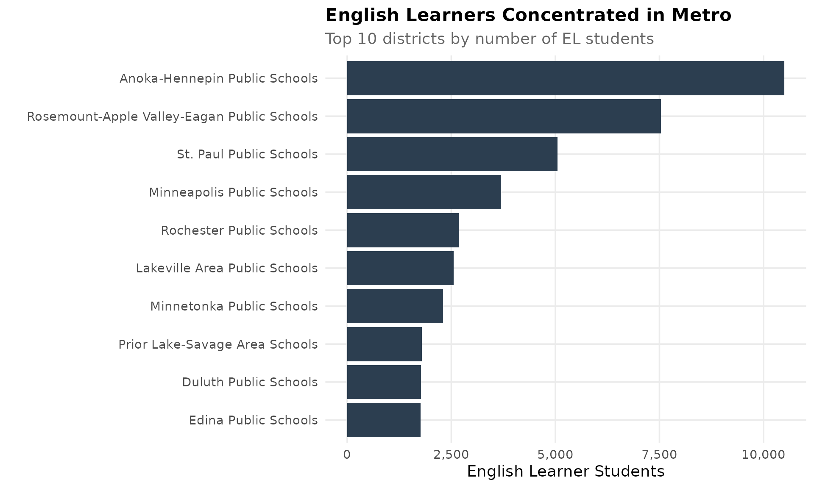
10. Free/Reduced lunch shows economic divide
Minnesota’s economic inequality is stark: from under 5% free/reduced lunch in wealthy districts like Edina and Minnetonka to over 70% in urban and rural districts. This gap has widened over the past decade.
enr_2024 %>%
filter(is_district, subgroup == "econ_disadv", grade_level == "TOTAL",
n_students > 500) %>%
arrange(desc(pct)) %>%
mutate(pct = round(pct * 100, 1)) %>%
select(district_name, n_students, pct) %>%
head(10)
#> # A tibble: 10 × 3
#> district_name n_students pct
#> <chr> <dbl> <dbl>
#> 1 Virginia Public Schools 1019 67.2
#> 2 Brooklyn Center Community Schools 1167 65.9
#> 3 Prior Lake-Savage Area Schools 6830 64.9
#> 4 Red Lake Public Schools 713 61.2
#> 5 St. Paul Public Schools 19009 59.8
#> 6 Hibbing Public Schools 1005 59.4
#> 7 Duluth Public Schools 4497 57.2
#> 8 Richfield Public Schools 2527 54.9
#> 9 Lakeville Area Public Schools 6255 51.6
#> 10 Anoka-Hennepin Public Schools 20349 50.6
econ <- enr_2024 %>%
filter(is_district, subgroup == "econ_disadv", grade_level == "TOTAL",
n_students > 500) %>%
arrange(desc(pct)) %>%
head(10) %>%
mutate(district_label = reorder(district_name, pct))
ggplot(econ, aes(x = district_label, y = pct * 100)) +
geom_col(fill = colors["total"]) +
coord_flip() +
labs(title = "Free/Reduced Lunch Shows Economic Divide",
subtitle = "Top 10 districts by percent economically disadvantaged",
x = "", y = "Percent Economically Disadvantaged") +
theme_readme()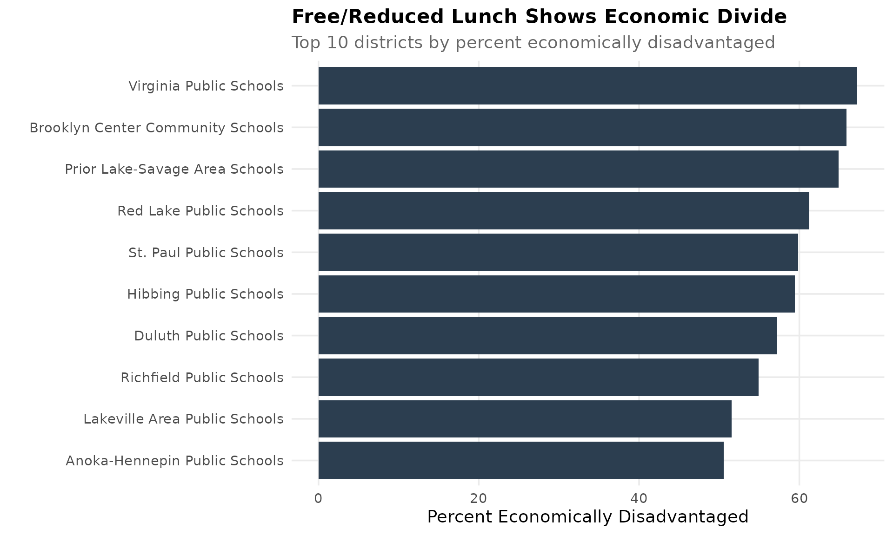
11. Duluth: Slow decline in the Northland
Minnesota’s fourth-largest city has seen steady enrollment decline as the regional economy has struggled. The Duluth school district has closed several schools and faces ongoing budget pressures.
enr %>%
filter(is_district, grepl("Duluth", district_name),
subgroup == "total_enrollment", grade_level == "TOTAL") %>%
select(end_year, district_name, n_students)
#> # A tibble: 10 × 3
#> end_year district_name n_students
#> <dbl> <chr> <dbl>
#> 1 2015 Duluth Public Schools 9500
#> 2 2016 Duluth Public Schools 9254
#> 3 2017 Duluth Public Schools 8946
#> 4 2018 Duluth Public Schools 8876
#> 5 2019 Duluth Public Schools 8695
#> 6 2020 Duluth Public Schools 8561
#> 7 2021 Duluth Public Schools 8431
#> 8 2022 Duluth Public Schools 8352
#> 9 2023 Duluth Public Schools 8132
#> 10 2024 Duluth Public Schools 7860
duluth <- enr %>%
filter(is_district, grepl("Duluth", district_name, ignore.case = TRUE),
subgroup == "total_enrollment", grade_level == "TOTAL")
ggplot(duluth, aes(x = end_year, y = n_students)) +
geom_line(linewidth = 1.5, color = colors["total"]) +
geom_point(size = 3, color = colors["total"]) +
scale_y_continuous(labels = comma, limits = c(0, NA)) +
labs(title = "Duluth: Slow Decline in the Northland",
subtitle = "Minnesota's fourth-largest city faces ongoing enrollment pressure",
x = "School Year", y = "Students") +
theme_readme()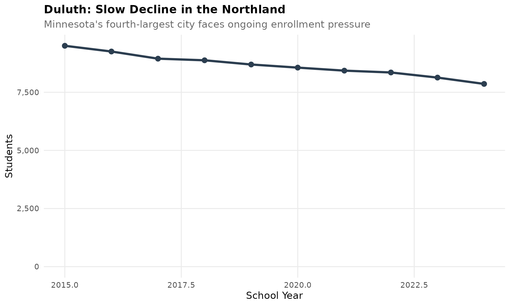
12. Native American students: concentrated in specific regions
Minnesota has significant Native American student populations, concentrated in districts near reservations including Red Lake, Cass Lake-Bena, and Fond du Lac. These districts often face unique funding and resource challenges.
enr_2024 %>%
filter(is_district, subgroup == "native_american", grade_level == "TOTAL",
n_students >= 50) %>%
arrange(desc(pct)) %>%
mutate(pct = round(pct * 100, 1)) %>%
select(district_name, n_students, pct) %>%
head(10)
#> # A tibble: 10 × 3
#> district_name n_students pct
#> <chr> <dbl> <dbl>
#> 1 Red Lake Public Schools 1106 95
#> 2 Fond du Lac Ojibwe School 320 85
#> 3 Cass Lake-Bena Public Schools 535 75
#> 4 Edina Public Schools 268 2.9
#> 5 Minneapolis Public Schools 767 2.6
#> 6 Anoka-Hennepin Public Schools 1031 2.6
#> 7 Minnetonka Public Schools 256 2.2
#> 8 Prior Lake-Savage Area Schools 202 1.9
#> 9 Rosemount-Apple Valley-Eagan Public Schools 550 1.8
#> 10 Duluth Public Schools 107 1.4
native <- enr_2024 %>%
filter(is_district, subgroup == "native_american", grade_level == "TOTAL") %>%
arrange(desc(pct)) %>%
filter(n_students >= 50) %>%
head(10) %>%
mutate(district_label = reorder(district_name, pct))
ggplot(native, aes(x = district_label, y = pct * 100)) +
geom_col(fill = colors["native"]) +
coord_flip() +
labs(title = "Native American Students by District",
subtitle = "Top 10 districts by percent Native American (min 50 students)",
x = "", y = "Percent Native American") +
theme_readme()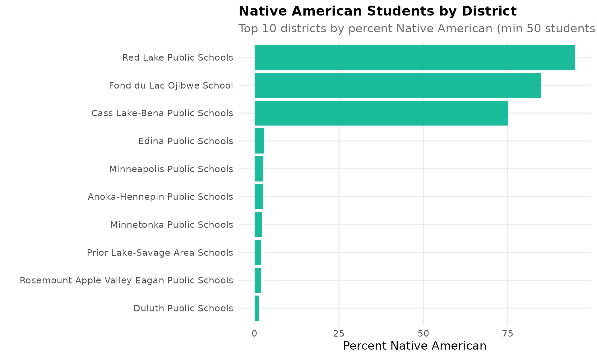
13. Anoka-Hennepin: The state’s largest district
Anoka-Hennepin serves over 37,000 students across 42 schools, making it by far Minnesota’s largest district. It has remained relatively stable while urban districts have declined, absorbing families from Minneapolis.
enr %>%
filter(is_district, grepl("Anoka-Hennepin", district_name),
subgroup == "total_enrollment", grade_level == "TOTAL") %>%
select(end_year, district_name, n_students)
#> # A tibble: 10 × 3
#> end_year district_name n_students
#> <dbl> <chr> <dbl>
#> 1 2015 Anoka-Hennepin Public Schools 37500
#> 2 2016 Anoka-Hennepin Public Schools 37974
#> 3 2017 Anoka-Hennepin Public Schools 38260
#> 4 2018 Anoka-Hennepin Public Schools 38498
#> 5 2019 Anoka-Hennepin Public Schools 38278
#> 6 2020 Anoka-Hennepin Public Schools 38577
#> 7 2021 Anoka-Hennepin Public Schools 38775
#> 8 2022 Anoka-Hennepin Public Schools 39384
#> 9 2023 Anoka-Hennepin Public Schools 39941
#> 10 2024 Anoka-Hennepin Public Schools 40238
ah <- enr %>%
filter(is_district, grepl("Anoka-Hennepin", district_name, ignore.case = TRUE),
subgroup == "total_enrollment", grade_level == "TOTAL")
ggplot(ah, aes(x = end_year, y = n_students)) +
geom_line(linewidth = 1.5, color = colors["total"]) +
geom_point(size = 3, color = colors["total"]) +
scale_y_continuous(labels = comma, limits = c(0, NA)) +
labs(title = "Anoka-Hennepin: Minnesota's Largest District",
subtitle = "Over 37,000 students across 42 schools",
x = "School Year", y = "Students") +
theme_readme()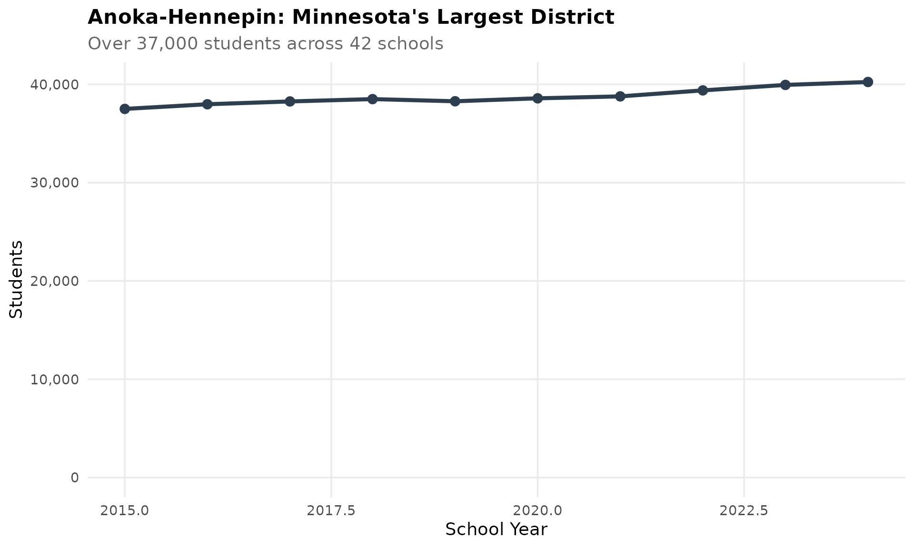
14. Rural consolidation continues
Small rural districts across Minnesota continue to consolidate or share services as enrollment declines. Many districts now have fewer than 500 students, making it difficult to offer comprehensive programming.
enr_2024 %>%
filter(is_district, subgroup == "total_enrollment", grade_level == "TOTAL") %>%
mutate(size_category = case_when(
n_students < 250 ~ "Under 250",
n_students < 500 ~ "250-500",
n_students < 1000 ~ "500-1,000",
n_students < 5000 ~ "1,000-5,000",
TRUE ~ "5,000+"
)) %>%
group_by(size_category) %>%
summarize(n_districts = n())
#> # A tibble: 5 × 2
#> size_category n_districts
#> <chr> <int>
#> 1 1,000-5,000 34
#> 2 250-500 107
#> 3 5,000+ 16
#> 4 500-1,000 149
#> 5 Under 250 44
small_districts <- enr_2024 %>%
filter(is_district, subgroup == "total_enrollment", grade_level == "TOTAL") %>%
mutate(size_category = case_when(
n_students < 250 ~ "Under 250",
n_students < 500 ~ "250-500",
n_students < 1000 ~ "500-1,000",
n_students < 5000 ~ "1,000-5,000",
TRUE ~ "5,000+"
)) %>%
group_by(size_category) %>%
summarize(n_districts = n(), .groups = "drop") %>%
mutate(size_category = factor(size_category,
levels = c("Under 250", "250-500", "500-1,000",
"1,000-5,000", "5,000+")))
ggplot(small_districts, aes(x = size_category, y = n_districts)) +
geom_col(fill = colors["total"]) +
labs(title = "Many Minnesota Districts Are Small",
subtitle = "Distribution of districts by total enrollment",
x = "District Size", y = "Number of Districts") +
theme_readme()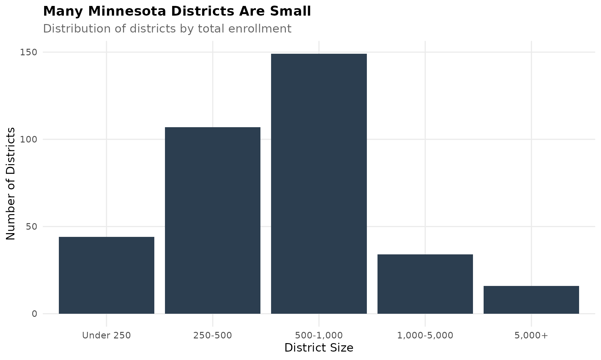
15. Special education rates vary by district
Special education identification rates vary significantly across Minnesota districts, from under 10% to over 20%. Larger urban districts tend to have higher identification rates, reflecting both student need and assessment capacity.
enr_2024 %>%
filter(is_district, subgroup == "special_ed", grade_level == "TOTAL",
n_students > 100) %>%
arrange(desc(pct)) %>%
mutate(pct = round(pct * 100, 1)) %>%
select(district_name, n_students, pct) %>%
head(15)
#> # A tibble: 15 × 3
#> district_name n_students pct
#> <chr> <dbl> <dbl>
#> 1 St. Paul Public Schools 6151 19.4
#> 2 Cass Lake-Bena Public Schools 136 19.1
#> 3 Red Lake Public Schools 221 19
#> 4 Richfield Public Schools 820 17.8
#> 5 Anoka-Hennepin Public Schools 7075 17.6
#> 6 Virginia Public Schools 253 16.7
#> 7 Lakeville Area Public Schools 2005 16.5
#> 8 Minnetonka Public Schools 1885 16.5
#> 9 Duluth Public Schools 1243 15.8
#> 10 Prior Lake-Savage Area Schools 1591 15.1
#> 11 Rochester Public Schools 2892 15.1
#> 12 Hibbing Public Schools 251 14.8
#> 13 Edina Public Schools 1315 14.2
#> 14 Brooklyn Center Community Schools 246 13.9
#> 15 Rosemount-Apple Valley-Eagan Public Schools 3968 13.1
sped <- enr_2024 %>%
filter(is_district, subgroup == "special_ed", grade_level == "TOTAL",
n_students > 100) %>%
arrange(desc(pct)) %>%
head(15) %>%
mutate(district_label = reorder(district_name, pct))
ggplot(sped, aes(x = district_label, y = pct * 100)) +
geom_col(fill = colors["total"]) +
coord_flip() +
labs(title = "Special Education Rates Vary by District",
subtitle = "Top 15 districts by percent receiving special education services",
x = "", y = "Percent Special Education") +
theme_readme()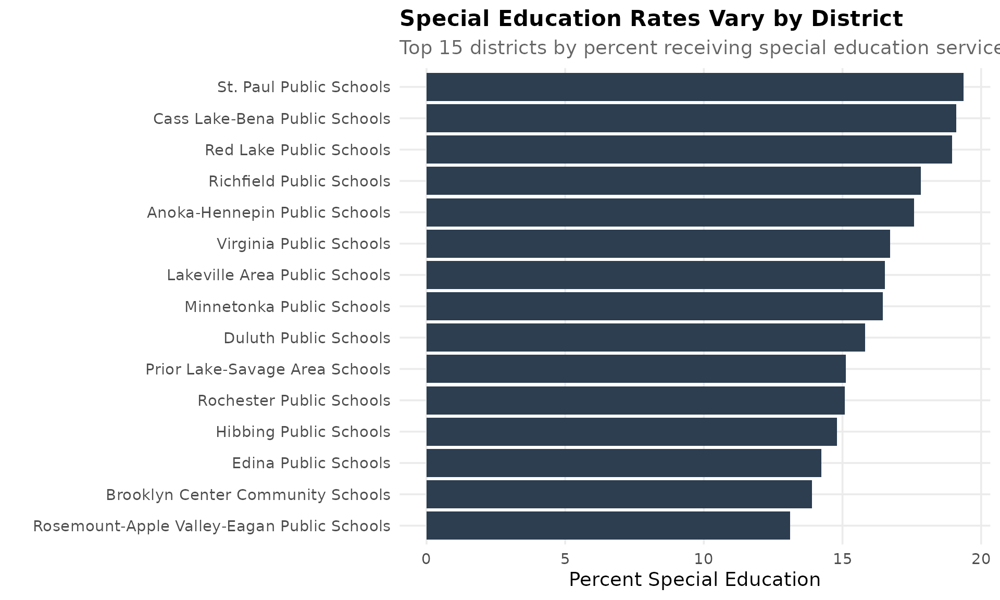
Session Info
sessionInfo()
#> R version 4.5.2 (2025-10-31)
#> Platform: x86_64-pc-linux-gnu
#> Running under: Ubuntu 24.04.3 LTS
#>
#> Matrix products: default
#> BLAS: /usr/lib/x86_64-linux-gnu/openblas-pthread/libblas.so.3
#> LAPACK: /usr/lib/x86_64-linux-gnu/openblas-pthread/libopenblasp-r0.3.26.so; LAPACK version 3.12.0
#>
#> locale:
#> [1] LC_CTYPE=C.UTF-8 LC_NUMERIC=C LC_TIME=C.UTF-8
#> [4] LC_COLLATE=C.UTF-8 LC_MONETARY=C.UTF-8 LC_MESSAGES=C.UTF-8
#> [7] LC_PAPER=C.UTF-8 LC_NAME=C LC_ADDRESS=C
#> [10] LC_TELEPHONE=C LC_MEASUREMENT=C.UTF-8 LC_IDENTIFICATION=C
#>
#> time zone: UTC
#> tzcode source: system (glibc)
#>
#> attached base packages:
#> [1] stats graphics grDevices utils datasets methods base
#>
#> other attached packages:
#> [1] scales_1.4.0 dplyr_1.1.4 ggplot2_4.0.1 mnschooldata_0.1.0
#>
#> loaded via a namespace (and not attached):
#> [1] gtable_0.3.6 jsonlite_2.0.0 compiler_4.5.2 tidyselect_1.2.1
#> [5] jquerylib_0.1.4 systemfonts_1.3.1 textshaping_1.0.4 yaml_2.3.12
#> [9] fastmap_1.2.0 R6_2.6.1 labeling_0.4.3 generics_0.1.4
#> [13] knitr_1.51 tibble_3.3.1 desc_1.4.3 bslib_0.10.0
#> [17] pillar_1.11.1 RColorBrewer_1.1-3 rlang_1.1.7 utf8_1.2.6
#> [21] cachem_1.1.0 xfun_0.56 fs_1.6.6 sass_0.4.10
#> [25] S7_0.2.1 cli_3.6.5 pkgdown_2.2.0 withr_3.0.2
#> [29] magrittr_2.0.4 digest_0.6.39 grid_4.5.2 lifecycle_1.0.5
#> [33] vctrs_0.7.1 evaluate_1.0.5 glue_1.8.0 farver_2.1.2
#> [37] codetools_0.2-20 ragg_1.5.0 rmarkdown_2.30 tools_4.5.2
#> [41] pkgconfig_2.0.3 htmltools_0.5.9